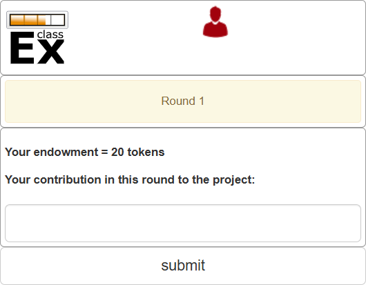
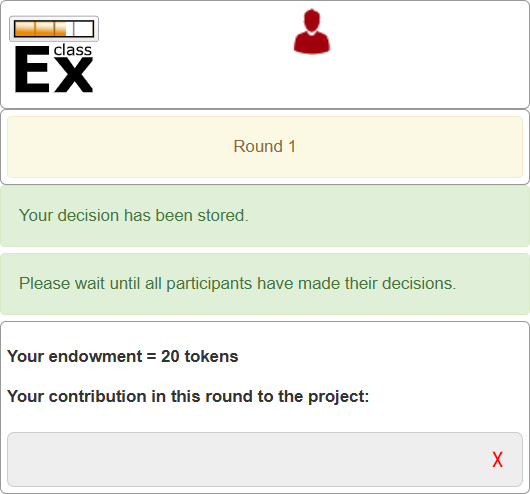
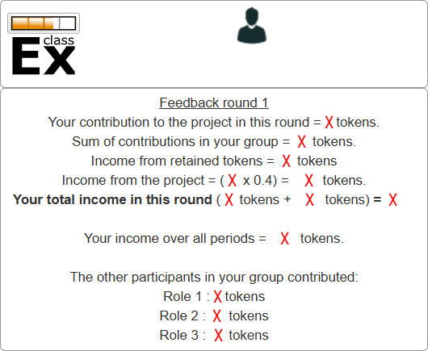
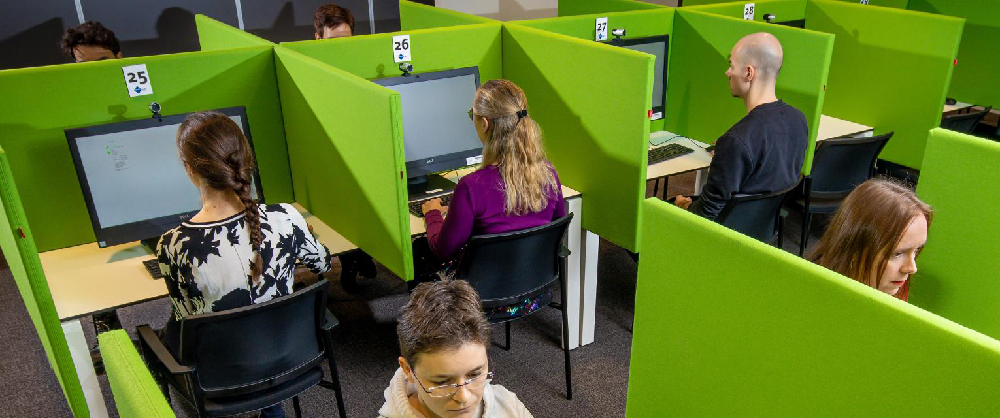

#1
October 2026
This experiment consists of 10 rounds.
You will be randomly assigned to a group of four students and remain in the same group for all 10 rounds. You will not know the identities of the other three members of your group.



\(\left( 20 -\text{your contribution} \right) + 0.4 \times \text{total contribution}\)

Sometimes, the consequences of your choices depend both on what you decide and on what others decide.
How would knowing this affect your decision-making?
This type of situation is known as a strategic interaction.
Strategic interaction
A social interaction in which participants are aware of how their actions affect others, and how others’ actions affect them.
The resulting game is called a 2×2 simulteous one-shot game with complete information.
This type of game can be represented using a matrix.
Player 1’s strategies (U and D) are listed in rows, Player 2’s strategies (L and R) are listed in colums.
Each cell of the matrix specifies the outcome of the game associated with the corresponding combination of strategies.
Let’s now write the players’ payoffs for each combination of strategies. An example is shown on the right.
Sometimes payoffs represent monetary gains or losses; other times, they represent how much players value the outcomes.
Player 1’s payoff for a given outcome is shown in the bottom-left corner of the cell.
Player 2’s payoff is shown in the top-right corner of the cell.
Imagine two farmers, Anil and Bala.
They face a problem: should they grow rice or cassava?
We assume that they have the ability to grow both types of crop, but can only grow one type at a time.
The farmers choose what to grow independently, which means they do not meet together to discuss a course of action.
Anil’s land is equally suitable for growing rice and cassava.
Bala’s land is likewise good for producing rice, but less suitable for cassava.
Both farmers sell whatever crop they produce in a nearby village market.
On market day, the price of each crop depends on the total quantity of that crop brought to the market: the less rice or cassava is supplied, the higher its price.
Best response
A player’s best response is the strategy that will bring about the player’s most-preferred outcome, given the strategies adopted by the other players.
Take Anil’s viewpoint.
If Bala chooses Rice, then Anil would receive a payoff of 4 by playing Rice and a payoff of 6 by playing Cassava.
Thus, for Anil, choosing Cassava is a best response when Bala chooses Rice.
Take Anil’s viewpoint.
If Bala chooses Cassava, then Anil would receive a payoff of 6 by playing Rice and a payoff of 5 by playing Cassava.
Thus, for Anil, choosing Rice is a best response when Bala chooses Cassava.
Take Bala’s viewpoint.
If Anil chooses Rice, then Bala would receive a payoff of 4 by playing Rice and a payoff of 3 by playing Cassava.
Thus, for Bala, choosing Rice is a best response when Anil chooses Rice.
Take Bala’s viewpoint.
If Anil chooses Cassava, then Bala would receive a payoff of 6 by playing Rice and a payoff of 2 by playing Cassava.
Thus, for Bala, choosing Rice is a best response when Anil chooses Cassava.
You may have noticed that there is one pair of strategies that are best responses to each other: Anil chooses Cassava and Bala chooses Rice.
We use the shorthand (Cassava, Rice) to refer to this combination of strategies, listing the row player’s (Anil’s) strategy first.
We call (Cassava, Rice) an equilibrium of the game: if Anil chooses Cassava and Bala chooses Rice, then neither of them wants to change their choice after seeing what the other player chose.
Nash equilibrium
A set of strategies, one for each player in the game, such that each player’s strategy is a best response to the strategies chosen by others.
Can we predict that Anil and Bala will play their Nash-equilibrium strategies?
From Anil’s viewpoint, the decision is not clear-cut: his best response depends on Bala’s choice.
Bala’s decision is easier: whatever Anil does, Bala receives a higher payoff from choosing Rice. We would therefore expect him to choose Rice.
Thus, if Anil thinks about Bala’s decision, he will expect Bala to choose Rice.
This simplifies Anil’s problem: his best response to Rice is Cassava.
This reasoning suggests that the Nash equilibrium gives us a plausible prediction of the game’s outcome. Usually, when a game has a unique Nash equilibrium, it is the most plausible outcome, although the strength of this prediction varies across games.
In the Nash equilibrium of the rice-cassava game, Anil and Bala each specialize in one crop, so neither crop is oversupplied.
Moreover, both crops are grown on land well suited to producing them.
By pursuing their self-interest and choosing the strategy that gives them the highest payoff, the players reach an outcome that gives each of them their highest possible payoff.
In this example, the Nash equilibrium is also the outcome that the players would have chosen had they been able to coordinate their decisions.
Although the two players pursued their self-interest independently, market prices guided them to an outcome that was in both players’ best interests.
This is an example of what is sometimes called an invisible hand game, because it reflects Adam Smith’s idea that forces that are not explicit (‘invisible’) can guide the players to the outcome that is best for both of them.
“It is not from the benevolence of the butcher, the brewer, or the baker, that we expect our dinner, but from their regard to their own interest.” (Adam Smith, The Wealth of Nations, 1776)
Pursuing self-interest without regard for others is sometimes considered morally wrong, but economic analysis has identified conditions under which it leads to socially desirable outcomes.
However, in many cases, the outcome of self-interested decisions is not in anyone’s best interest.
This is the topic of the next lecture!